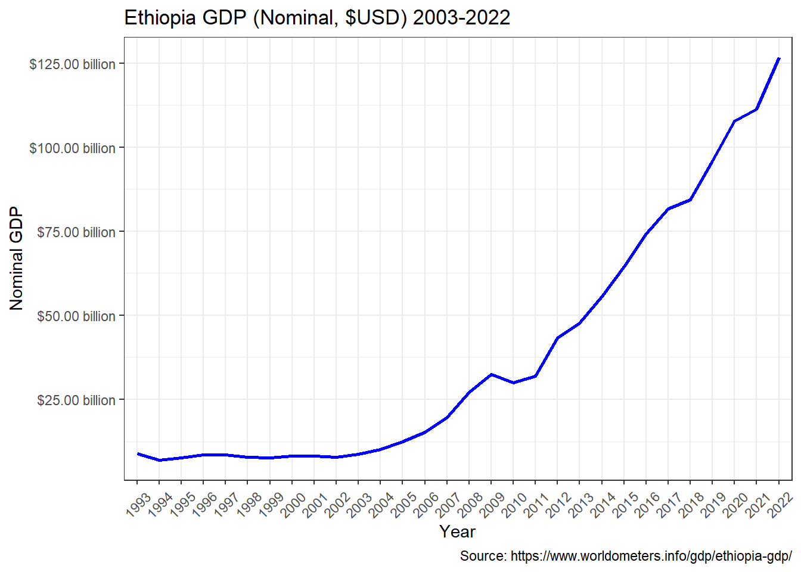

What and why?
In this blog, we are going to import table from website into R. This is very important because it saves a time to copy the table manually and going through a lot of pain in excel to import the table into R. Doing it in that way is time consuming, tedious and prone to mistake. That’s why rvest (harvest) package is there for you on CRAN. Install the package from CRAN using install.packages() function and let’s dive in.
Getting started
First we need to have the url for the website from which we are planning to import the data as a dataframe in R. Here I am using Ethiopian GDP table from worldmeters website. Once we have the link to the website, we have to load the package and read html file from that page of website, which also contains the table of interest.
html_element(raw_html, "table") |>
html_table()# A tibble: 2 × 1
X1
<chr>
1 Ethiopia GDP (Nominal, $USD) 2003-2022
2 GDP change (%) html_elements(raw_html, "table") |>
html_table()[[1]]
# A tibble: 2 × 1
X1
<chr>
1 Ethiopia GDP (Nominal, $USD) 2003-2022
2 GDP change (%)
[[2]]
# A tibble: 30 × 7
Year `GDP Nominal (Current USD)` `GDP Real (Inflation adj.)` `GDP change`
<int> <chr> <chr> <chr>
1 2022 $126,783,000,000 $105,776,000,000 5.32%
2 2021 $111,262,000,000 $100,435,000,000 5.64%
3 2020 $107,658,000,000 $95,071,776,945 6.06%
4 2019 $95,912,607,970 $89,640,012,689 8.36%
5 2018 $84,269,196,152 $82,721,145,212 6.82%
6 2017 $81,770,886,909 $77,442,546,767 9.56%
7 2016 $74,296,745,599 $70,682,352,527 9.43%
8 2015 $64,589,329,345 $64,589,329,345 10.39%
9 2014 $55,612,228,234 $58,508,821,687 10.26%
10 2013 $47,648,276,190 $53,065,619,502 10.58%
# ℹ 20 more rows
# ℹ 3 more variables: `GDP per capita` <chr>, `Pop. change` <chr>,
# Population <chr>gdp_tbl <- html_elements(raw_html, "table") |>
html_table() |>
_[[2]] |>
janitor::clean_names()Rows: 30
Columns: 7
$ year <int> 2022, 2021, 2020, 2019, 2018, 2017, 2016, 2015…
$ gdp_nominal_current_usd <chr> "$126,783,000,000", "$111,262,000,000", "$107,…
$ gdp_real_inflation_adj <chr> "$105,776,000,000", "$100,435,000,000", "$95,0…
$ gdp_change <chr> "5.32%", "5.64%", "6.06%", "8.36%", "6.82%", "…
$ gdp_per_capita <chr> "$857", "$835", "$811", "$785", "$744", "$716"…
$ pop_change <chr> "2.57 %", "2.64 %", "2.69 %", "2.69 %", "2.71 …
$ population <chr> "123,379,924", "120,283,026", "117,190,911", "…convert_to_numeric <- function(x) {
as.numeric(str_remove_all(x, "[$,%\\s]"))
}
gdp_tbl <- gdp_tbl |>
mutate_all(convert_to_numeric)gdp_tbl |>
ggplot() +
geom_line(aes(x = factor(year),
y = gdp_nominal_current_usd,
group = 1),
color = "blue", linewidth = 1) +
scale_y_continuous(labels = scales::dollar_format(scale = 1/1000000000,
suffix = " billion")) +
labs(x = "Year",
y = "Nominal GDP",
title = "Ethiopia GDP (Nominal, $USD) 2003-2022",
caption = "Source: https://www.worldometers.info/gdp/ethiopia-gdp/") +
theme_bw() +
theme(axis.text.x = element_text(angle = 45, vjust = 0.5))